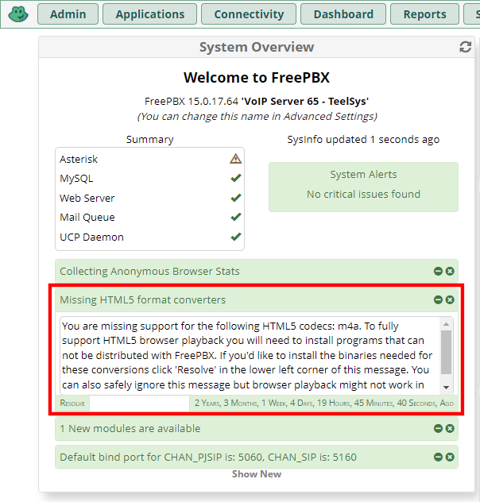

You may notice issues or tasks in the System Overview of the dashboard. One of the
items is "" with the following description:
"You are missing support for the following HTML5 codecs: m4a. To fully support HTML5
browser playback you will need to install programs that can not be distributed with
FreePBX. If you'd like to install the binaries needed for these conversions click
'Resolve' in the lower left corner of this message. You can also safely ignore this
message but browser playback might not work in your browser." In order to resolve
and understand this item, you may click the resolve button that will take you to a
page on
freepbx.org
that will provide more information.

After running the above steps, I still saw the message displayed. I attempted to restart
FreePBX by running the following command by the item still appears in the System Overview
widget.
fwconsole restart
root@raspbx:~# fwconsole restart Running FreePBX shutdown... Running Asterisk pre from Core module Stopping Core FastAGI Server Stopped FastAGI Server Running Asterisk pre from Ucp module Stopping UCP Node Server [>---------------------------] 3 secs Stopped UCP Node Server Shutting down Asterisk Gracefully. Will forcefully kill after 30 seconds. Press C to Cancel Press N to shut down NOW [============================] < 1 sec DAHDI NOT FOUND [Suggest Uninstalling the Dahdi Configuration Module]! Running FreePBX startup... Running Asterisk pre from Dahdiconfig module DAHDI NOT FOUND [Suggest Uninstalling the Dahdi Configuration Module]! Starting Asterisk... [============================] 3 secs Asterisk Started Running Asterisk post from Core module Starting Core FastAGI Server... [>---------------------------] 3 secs Started Core FastAGI Server. PID is 5085 Running Asterisk post from Dahdiconfig module Running Asterisk post from Ucp module Starting UCP Node Server... [>---------------------------] 3 secs Started UCP Node Server. PID is 5285 root@raspbx:~#